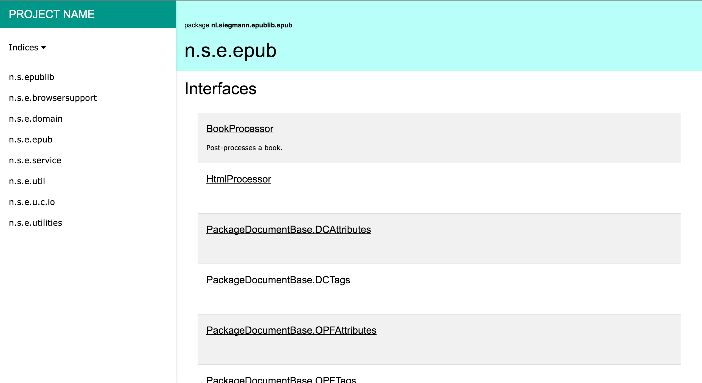
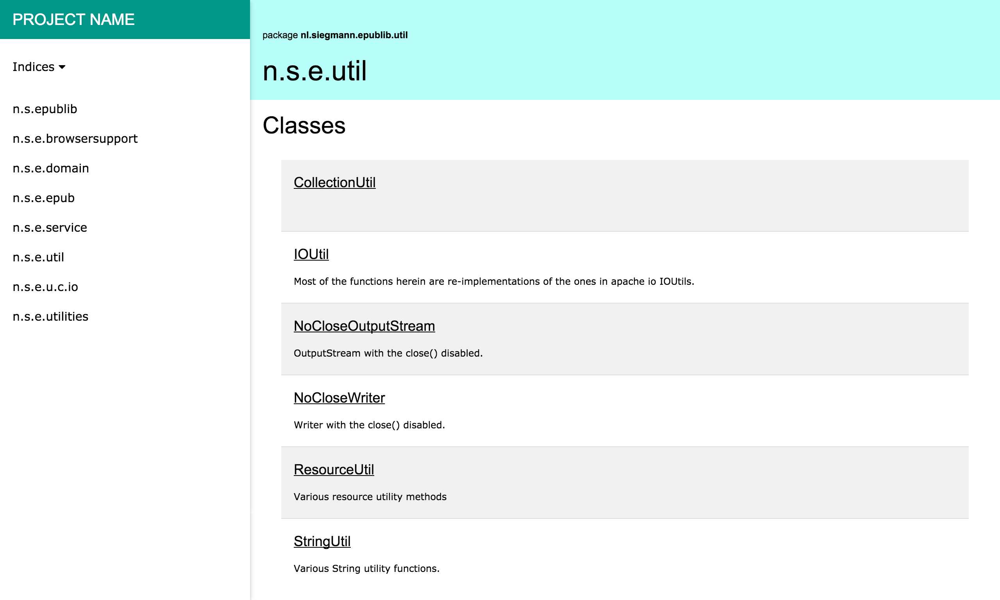

Doclava is a modern javadoc alternative.
Javadoc is (or at least may be) the most important documentation that any Java developer may deliver beside the code and the product. However the current state of Javadoc has some drawbacks:
We believe even technical people has deserved a modern look and feel in their daily work. Therefore this project aims to provide a modern alternative for standard Javadoc.
You can view a sample output here. Bear in mind that the code is still in beta status.

